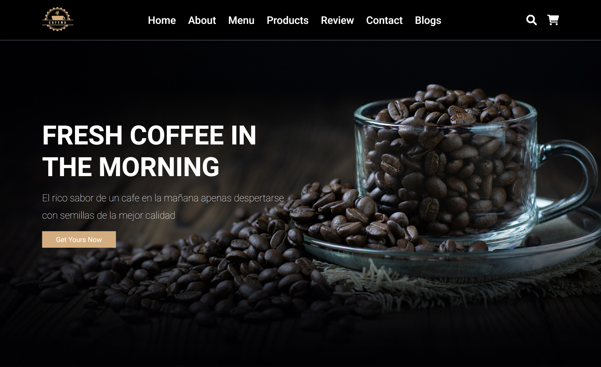
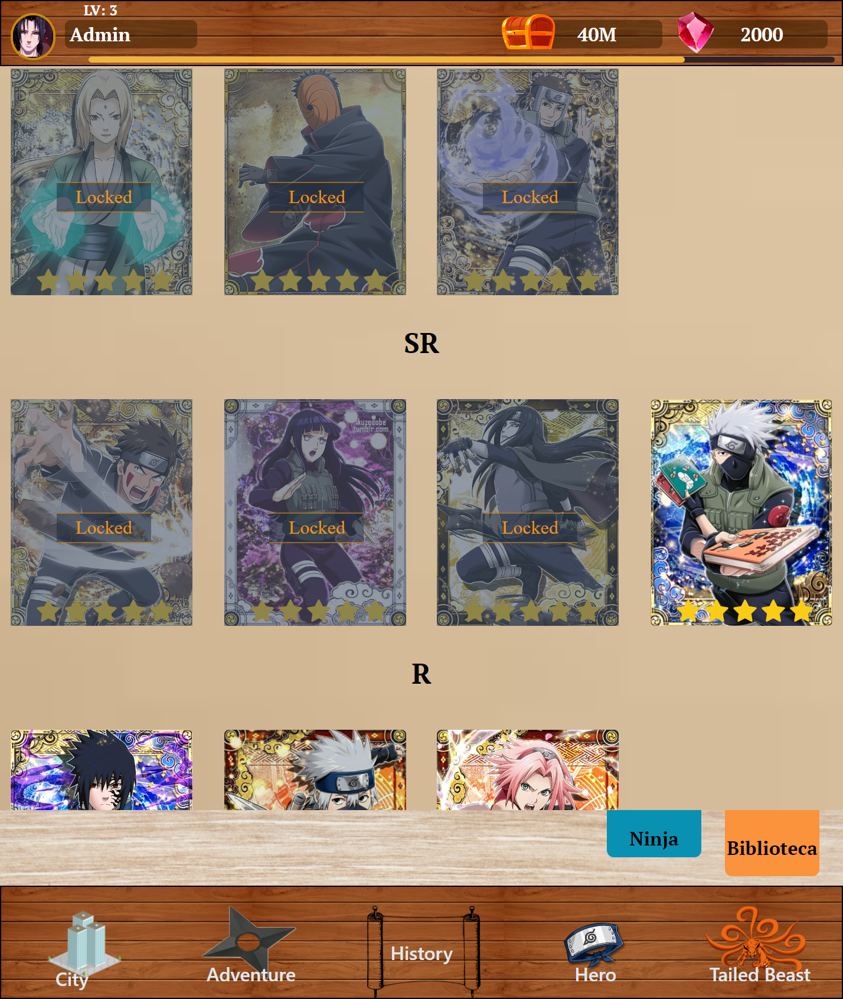
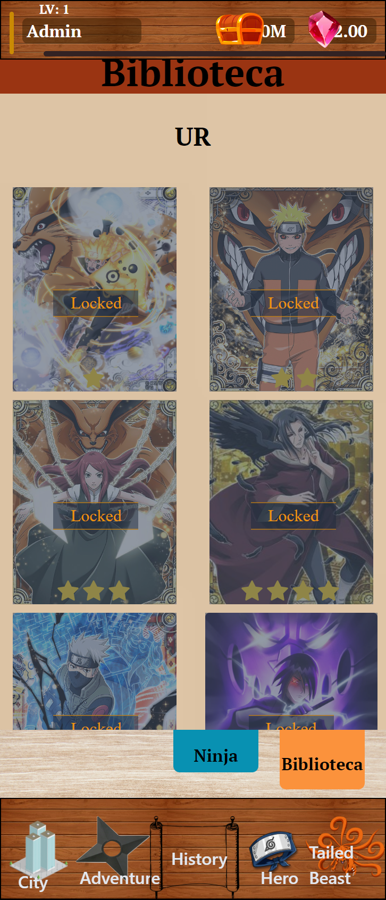
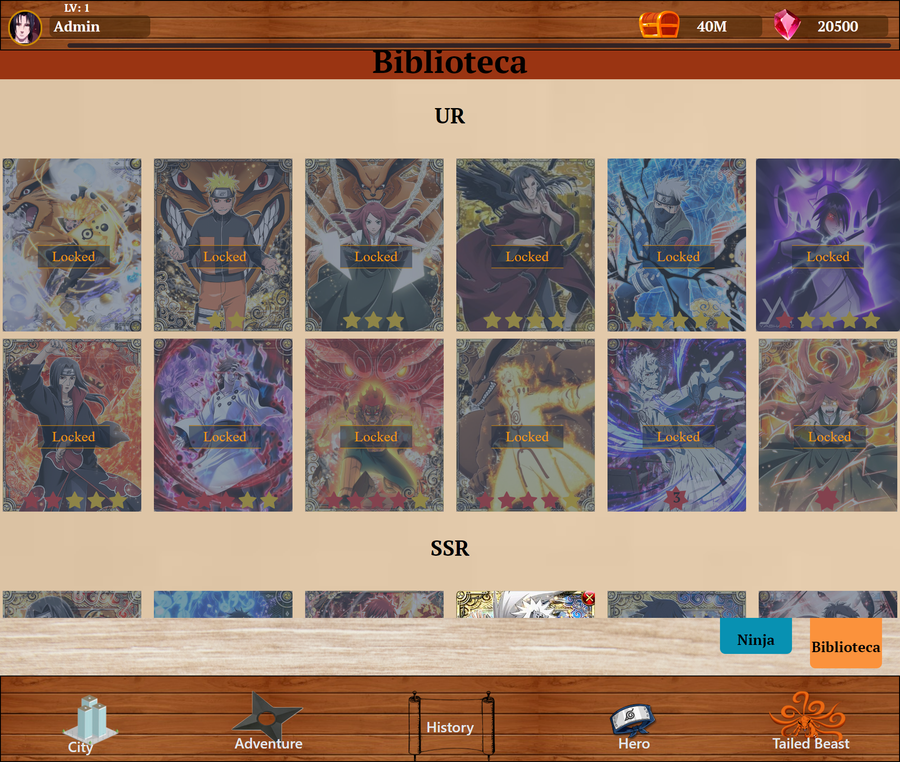

<swiper #swiper
    [config]="config"
    (slideChange)="changeProyectSlide()"
    >
        <ng-template swiperSlide class="swiperSlideProyectOne"> 
            <div class="w-[95%]">
                <h2 class="swiperSlideCoffeH2 cursor-pointer" (click)="redirectPage('coffe')">Coffe Proyect</h2>
                <div class="h-[90vh] w-full max-h-[90vh]">
                    
                </div>
            </div>
        </ng-template>
        <ng-template swiperSlide > 
            <h2 class="swiperSlideBookFlixH2 cursor-pointer" (click)="redirectPage('bookflix')">BookFlix Proyect</h2>
            <div class="h-full w-full flex items-end">
                
            </div>
        </ng-template>
        <ng-template swiperSlide > 
            <h2 class="swiperSlideNarutoH2 cursor-pointer" (click)="redirectPage('naruto')">Naruto Game Card Proyect</h2>
            <div class="h-full w-full flex items-end">
                
                
                
                <!--  -->
            </div>
        </ng-template>
        <ng-template swiperSlide > 
            <h2 class="swiperSlideShiplandH2 cursor-pointer" (click)="redirectPage('shipland')">Shipland</h2>
            <div class="h-full w-full flex items-end">
                
                
                
            </div>
        </ng-template>
</swiper>
    <div #backProyect class="swiper-buttonCustom-back swiper-button-hidden cursor-pointer" (click)="back()">
        <fa-icon [icon]="changeViewIconI" ></fa-icon>
    </div>
    <div #nextProyect class="swiper-buttonCustom-next cursor-pointer" (click)="next()">
        <fa-icon [icon]="changeViewIconR" ></fa-icon>
    </div>
